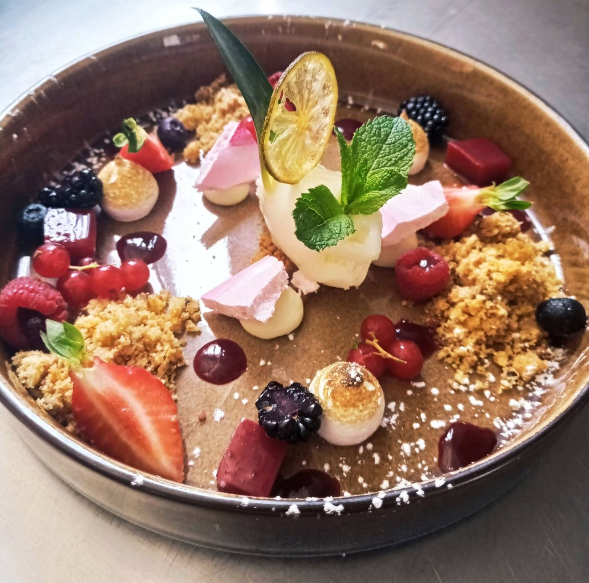

KévinMarion
Chef de cuisine. Formé dans les Pyrénées, installé à Leucate, au bord de la Méditerranée.


TarbesSaint-Lary-SoulanPort-LeucateLe BarcarèsLa FranquiBronze MAFLauréat CREACC 2023
Le métier appris en concours.
Apprentissage au CFA de Tarbes, puis les brigades de montagne et de bord de mer.
Kévin s'est fait remarquer dès l'apprentissage : 3e au concours des Disciples d'Escoffier en 2014, puis médaille de bronze au Meilleur Apprenti de France en 2015.
Second de cuisine à La Mangeoire, au Mercure Sensoria de Saint-Lary-Soulan, il y pratique une cuisine semi-gastronomique entièrement faite maison. Il rejoint ensuite le littoral audois et catalan, où il dirige des cuisines de saison jusqu'à 200 couverts.
Sa cuisine : produits de la mer, légumes de saison, fleurs comestibles, et une vraie pâtisserie de restaurant.
Lauréat du prix CREACC
21e édition, Montpellier, pour le projet Monts & Mers.
Bronze, Meilleur Apprenti de France
Épreuve du 13 mai 2015, CFA de Tarbes.
3e, concours des Disciples d'Escoffier
28 novembre 2014.
Le parcours, en sept services
Du plus récent au premier.
Ses assiettes
Photographiées en service par Kévin.



Monts& Mers
Le projet de Kévin : un restaurant éco-responsable à Leucate, avec des produits locaux, engagés et uniquement de saison. Le nom résume son parcours, des Pyrénées à la Méditerranée.
Il a été récompensé par le prix CREACC le 6 décembre 2023 à Montpellier.

Une brigade à monter ?
kevin.marion6@gmail.comBasé à Leucate. Son travail au quotidien sur Facebook.